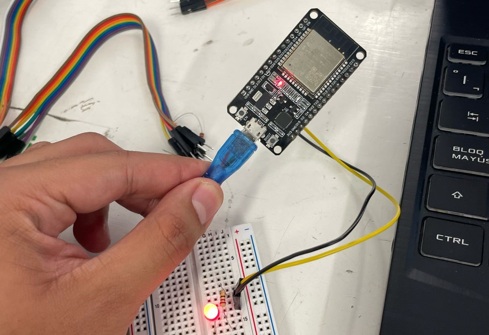
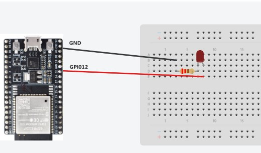
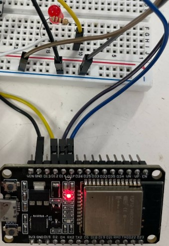
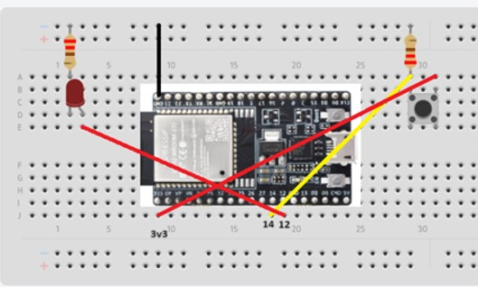
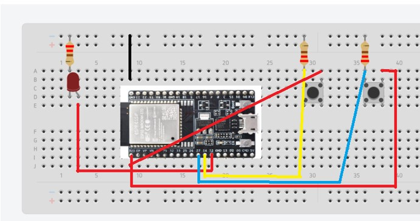

El microcontrolador ESP32, un popular dispositivo para la programación de IOT ya que incluye Wifi y Bluetooth y su rendimiento superior a dispositivos como Arduino 1, lo vuelven una opcion muy comun para desarrollar proyectos un poco más elaborados.
En esta practica se realizaron sencillas practicas para probar esta placa
- Introducción -
El ESP32 es un microcontrolador de bajo costo y alto rendimiento desarrollado por Espressif Systems, equipado con un procesador de doble núcleo Xtensa LX6 de hasta 240 MHz, memoria RAM interna y externa, conectividad Wi-Fi y Bluetooth integrada, y una amplia gama de periféricos. Compatible con entornos de desarrollo como Arduino IDE y PlatformIO, ofrece soporte para una variedad de protocolos de comunicación y una gran cantidad de librerías disponibles. Sus ventajas incluyen potencia y rendimiento mejorados, conectividad integrada y una amplia comunidad de usuarios, mientras que sus desventajas pueden incluir un consumo de energía relativamente alto y una complejidad adicional en comparación con microcontroladores más simples. En general, el ESP32 es una opción versátil y poderosa para una variedad de aplicaciones, desde proyectos simples hasta sistemas complejos de IoT..
- Materiales -
Computadora
Arduino IDE
ESP 32
LED, resistencia de 220 Ohms
4 Botones y 4 resistencias de 1Khom
Protoboard y cables
- Desarrollo -
Objetivo General:
Conocer, identificar y comprobar el funcionamiento de las entradas y salidas digitales en el módulo NodeMCU ESP8266 o ESP32.
Para ello se desarrollaron los siguientes objetivos especificos:
Desarrollar un programa de encendido de un LED mediante programación.
Desarrollar un programa de apagado de un LED mediante programación.
Desarrollar un programa de encendido y apagado de un LED mediante retardos.
Desarrollar un sistema de encendido y apagado de un LED mediante el uso de botones.
Desarrollar un sistema de encendido y apagado de un LED mediante el uso de dos botones y una condicional OR.
Desarrollar un sistema de encendido y apagado de un LED mediante el uso de dos botones y una condicional AND.
- Resultados -
Primera Parte


Podemos observar el led siempre en encendido en el Pin digital 12
Segunda Parte

Podemos observar el led siempre en apagado en el Pin digital 12
Tercera parte
Podemos observar el led encendiendo y apagado con un delay de 1 seg en el Pin digital 12
Cuarta parte

Podemos observar que al presionar el boton se enciede el led, en vez de usar la resistencia fisica se uso la resistencia pullup incluida en el esp32.
Quinta parte

Podemos observar el comportamiento de una compuerta OR, solo que se uso como pull up en vez de pull down.
Sexta parte
Podemos observar el comportamiento de una compuerta AND, solo que se uso como pull up en vez de pull down.
- Conclusiones -
Estos sencillos circuitos sirvieron para repasar conceptos basicos de conexiones y programacion del ESP32 para posteriormente diseñar circuitos e implementar codigos para complejos
- Referencias -
ESP32 Hardware Reference. https://demo-dijiudu.readthedocs.io/en/latest/hw-reference/